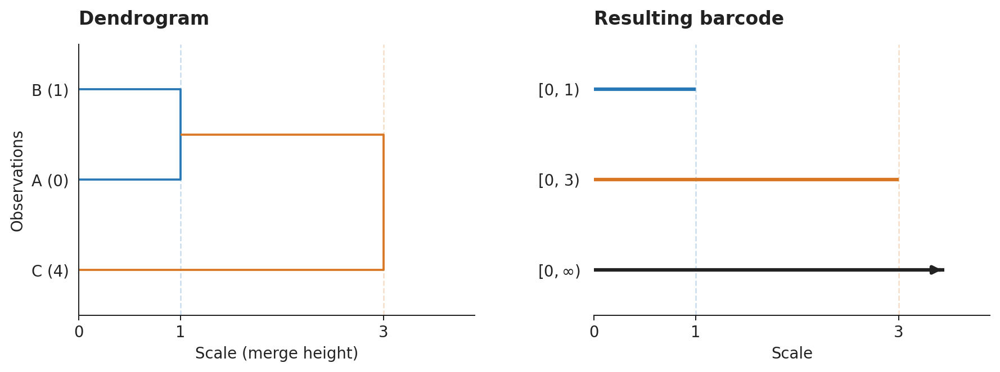
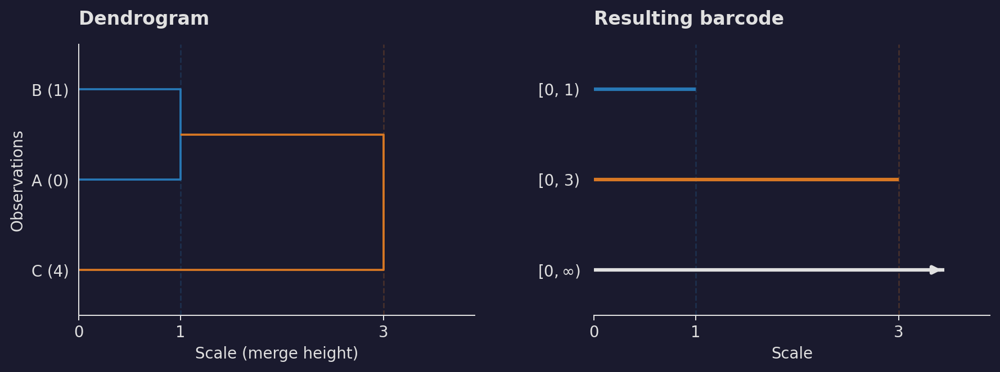
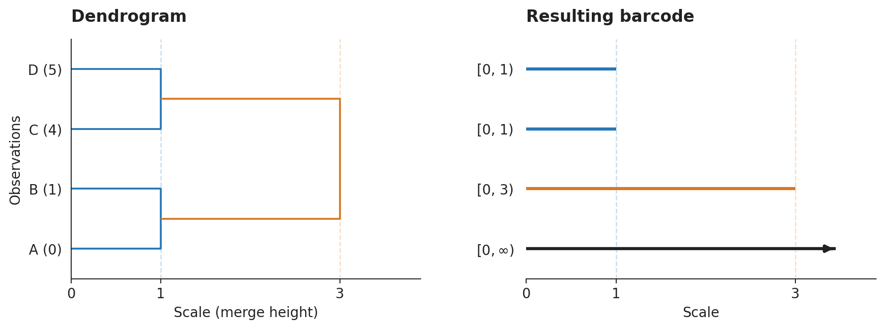
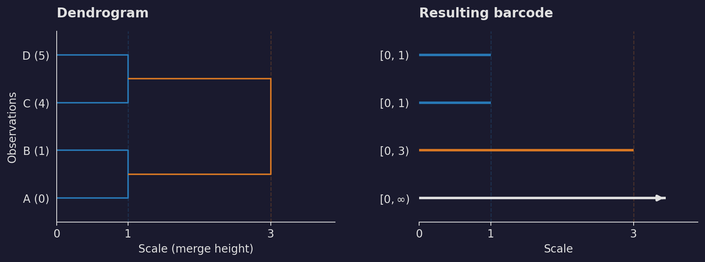

Converting SciPy linkage matrices#
Use linkage_to_barcode to turn an existing hierarchical clustering result
into a single Barcode:
from scipy.cluster.hierarchy import linkage
from stablebear.persistence import linkage_to_barcode
Z = linkage([[0.0], [1.0], [4.0]], method="single")
bc = linkage_to_barcode(Z)
# Intervals: [0, 1), [0, 3), [0, inf).
reduced_bc = linkage_to_barcode(Z, reduced=True)
# Intervals: [0, 1), [0, 3).
Only the clustering step requires SciPy. linkage_to_barcode converts the
merges already recorded in Z; it does not recompute the clustering.
Converting a dendrogram to a barcode#
A dendrogram draws the clustering as a tree. In the figures below, read it from left to right: observations start at scale zero, and each vertical join marks the scale at which two clusters become one. Both panels use the same scale increasing to the right. The barcode records these reductions in the number of clusters. All bars start at zero, and one bar ends at each merge height. One bar continues forever because a single cluster remains after all the merges. For now, assume the merge heights are positive and nondecreasing.
Three observations, two merges#
The example above uses single linkage on three points on a line:
A = 0, B = 1, and C = 4. First, A and B merge at height 1.
Their cluster then merges with C at height 3, the distance from B to C.
The two finite barcode intervals therefore end at 1 and 3. Matching colors
in the figure connect each merge height to its bar endpoint.




Show code
import matplotlib.pyplot as plt
import numpy as np
from scipy.cluster.hierarchy import dendrogram, linkage
from stablebear.persistence import linkage_to_barcode
from stablebear.plotting import plot_barcode
def plot_linkage_pair(Z, bc, labels):
"""Plot a monotone linkage matrix alongside its converted barcode."""
intervals = bc.to_numpy()
heights = np.unique(Z[:, 2])
palette = ["#2878b5", "#d87824", "#29956a"]
colors = {h: palette[i % len(palette)] for i, h in enumerate(heights)}
foreground = plt.rcParams["text.color"]
limit = float(heights[-1]) * 1.3
fig, (tree_ax, bar_ax) = plt.subplots(1, 2, figsize=(10, 3.8), sharex=True)
dendrogram(
Z, labels=labels, ax=tree_ax, orientation="right",
link_color_func=lambda cluster: colors[Z[cluster - len(labels), 2]],
)
tree_ax.set_title("Dendrogram", loc="left", weight="bold", pad=14)
tree_ax.set_ylabel("Observations")
tree_ax.set_xlabel("Scale (merge height)")
tree_ax.set_xlim(0, limit)
tree_ax.set_xticks([0, *heights])
tree_ax.tick_params(axis="y", labelsize=11)
for height in heights:
tree_ax.axvline(height, color=colors[height], alpha=0.25,
linewidth=1, linestyle="--", zorder=0)
bar_ax.axvline(height, color=colors[height], alpha=0.25,
linewidth=1, linestyle="--", zorder=0)
plot_barcode(bc, ax=bar_ax, color=foreground, linewidth=2.5)
# All births are zero; plot_barcode orders these intervals longest first.
shown = intervals[np.argsort(intervals[:, 1])[::-1]]
bar_ax.collections[-1].set_colors([
foreground if np.isinf(death) else colors[death]
for _, death in shown
])
interval_labels = [
r"$[0,\infty)$" if np.isinf(death) else f"[0, {death:g})"
for _, death in shown
]
bar_ax.set_title("Resulting barcode", loc="left", weight="bold", pad=14)
bar_ax.set_xlabel("Scale")
bar_ax.set_xlim(0, limit)
bar_ax.set_xticks([0, *heights])
bar_ax.set_yticks(range(len(intervals)), interval_labels)
bar_ax.set_ylim(-0.5, len(intervals) - 0.5)
bar_ax.tick_params(axis="y", length=0, pad=10)
for ax in (tree_ax, bar_ax):
ax.spines[["top", "right"]].set_visible(False)
bar_ax.spines["left"].set_visible(False)
fig.tight_layout(w_pad=4)
return fig
def plot_three_points():
Z = linkage([[0.0], [1.0], [4.0]], method="single")
bc = linkage_to_barcode(Z)
# bc.to_numpy(): [[0, 1], [0, 3], [0, inf]]
return plot_linkage_pair(Z, bc, labels=["A (0)", "B (1)", "C (4)"])
plot_three_points()
plt.show()
At any scale, count the bars that have not yet ended to recover the number of clusters. Here there are three clusters below 1, two from 1 up to (but not including) 3, and one from 3 onwards. The finite intervals exclude their right endpoints: at a merge height, the merge has already happened and the corresponding bar is no longer present.
Several merges at the same height#
Now add a fourth point, D = 5. A and B merge at height 1, and so do C
and D. The two pairs merge at height 3. This produces two copies of
[0, 1), followed by [0, 3) and [0, inf). Equal merge heights
therefore appear as repeated intervals; they are not combined into a
single bar.




Show code
import matplotlib.pyplot as plt
import numpy as np
from scipy.cluster.hierarchy import dendrogram, linkage
from stablebear.persistence import linkage_to_barcode
from stablebear.plotting import plot_barcode
def plot_linkage_pair(Z, bc, labels):
"""Plot a monotone linkage matrix alongside its converted barcode."""
intervals = bc.to_numpy()
heights = np.unique(Z[:, 2])
palette = ["#2878b5", "#d87824", "#29956a"]
colors = {h: palette[i % len(palette)] for i, h in enumerate(heights)}
foreground = plt.rcParams["text.color"]
limit = float(heights[-1]) * 1.3
fig, (tree_ax, bar_ax) = plt.subplots(1, 2, figsize=(10, 3.8), sharex=True)
dendrogram(
Z, labels=labels, ax=tree_ax, orientation="right",
link_color_func=lambda cluster: colors[Z[cluster - len(labels), 2]],
)
tree_ax.set_title("Dendrogram", loc="left", weight="bold", pad=14)
tree_ax.set_ylabel("Observations")
tree_ax.set_xlabel("Scale (merge height)")
tree_ax.set_xlim(0, limit)
tree_ax.set_xticks([0, *heights])
tree_ax.tick_params(axis="y", labelsize=11)
for height in heights:
tree_ax.axvline(height, color=colors[height], alpha=0.25,
linewidth=1, linestyle="--", zorder=0)
bar_ax.axvline(height, color=colors[height], alpha=0.25,
linewidth=1, linestyle="--", zorder=0)
plot_barcode(bc, ax=bar_ax, color=foreground, linewidth=2.5)
# All births are zero; plot_barcode orders these intervals longest first.
shown = intervals[np.argsort(intervals[:, 1])[::-1]]
bar_ax.collections[-1].set_colors([
foreground if np.isinf(death) else colors[death]
for _, death in shown
])
interval_labels = [
r"$[0,\infty)$" if np.isinf(death) else f"[0, {death:g})"
for _, death in shown
]
bar_ax.set_title("Resulting barcode", loc="left", weight="bold", pad=14)
bar_ax.set_xlabel("Scale")
bar_ax.set_xlim(0, limit)
bar_ax.set_xticks([0, *heights])
bar_ax.set_yticks(range(len(intervals)), interval_labels)
bar_ax.set_ylim(-0.5, len(intervals) - 0.5)
bar_ax.tick_params(axis="y", length=0, pad=10)
for ax in (tree_ax, bar_ax):
ax.spines[["top", "right"]].set_visible(False)
bar_ax.spines["left"].set_visible(False)
fig.tight_layout(w_pad=4)
return fig
def plot_tied_merges():
Z = linkage([[0.0], [1.0], [4.0], [5.0]], method="single")
bc = linkage_to_barcode(Z)
# bc.to_numpy(): [[0, 1], [0, 1], [0, 3], [0, inf]]
return plot_linkage_pair(Z, bc, labels=["A (0)", "B (1)", "C (4)", "D (5)"])
plot_tied_merges()
plt.show()
At height 1 the number of clusters drops from four to two, so two bars end together. Although the linkage matrix records these as two separate rows, both merges take place at the same scale.
In either example, reduced=True removes just the infinite interval.
The finite bars and their endpoints stay the same. The barcode records
when the cluster count drops, but does not retain which observations
merged: different trees can have the same barcode. Its rows are intervals,
not labels for particular observations.
Input and validation#
Input must be an (n - 1, 4) NumPy array with float32 or float64 precision,
which is preserved in the output. The input is not modified. Empty (0, 4)
input represents a single observation, producing one infinite interval (or an
empty barcode in reduced mode). Invalid cluster references or counts, non-finite
entries, and negative heights raise ValueError.
Zero-length intervals are omitted: observations that merge at height zero are already together at the starting scale. Conversion preserves the input clustering and its tie-breaking choices, and validation and conversion run in C++ with the Python GIL released.
Non-monotone merge heights#
Inversions, such as those from centroid or median linkage, are handled by delaying each parent merge until both child clusters exist. Its effective height is the maximum of its supplied height and its children’s effective heights. For example, child merges at 3.0 and 3.5 followed by a parent merge at 3.25 produce finite bars ending at 3.0, 3.5, and 3.5. Heights are not sorted, and unrelated branches do not delay one another.
Conversion emits one UserWarning when input merge heights are non-monotone:
a row’s height is lower than the preceding row’s height. This includes decreases
on independent branches, even when no parent height needs adjustment. Equal
heights are allowed and do not trigger a warning.
Mathematical background#
The construction below is described by Bauer et al. [1]. Our exposition largely follows the notes for the KTH TDA course (SF2565) [2].
Linkage distances and merge heights#
Let \(X\) be a finite set of observations with a distance \(d : X \times X \to [0,\infty)\). Choose a linkage rule \(\psi\) that extends \(d\) to a distance \(\psi d\) between nonempty subsets of \(X\), with
For example, single linkage uses \(\psi d(A,B)=\min_{x\in A,\,y\in B}d(x,y)\). For distinct clusters, complete linkage uses the maximum of these distances, and average linkage uses their arithmetic mean.
Starting with one cluster per observation, hierarchical clustering repeatedly joins a pair of current clusters \(A,B\) attaining the smallest current linkage distance \(\psi d(A,B)\), resolving ties according to a tie-breaking rule. Each join is recorded as one row of the linkage matrix. The merge height is this distance:
It is recorded in the third column of the corresponding linkage row. Assume throughout this explanation that these merge heights are nondecreasing. The resulting dendrogram is also called the \(\psi\) linkage of \(d\) and denoted by \(\psi d\); we write \(D\) for this dendrogram below. The linkage matrix specifies the chosen pair at each merge, including any tie-breaking choices.
Clusters and transition maps#
A linkage matrix describes a dendrogram: a family of partitions of \(X\), indexed by a scale \(t \geq 0\). To describe these partitions in terms of distances between points, let \(u(x,y)\) be the merge height at which observations \(x\) and \(y\) first belong to the same cluster, with \(u(x,x)=0\). This is the distance induced by the dendrogram. Define
Here \(X/{\sim_t}\) is the partition of \(X\) induced by the equivalence relation \(\sim_t\): its blocks are the equivalence classes of observations that have merged by scale \(t\). The induced distance satisfies \(u(x,z) \leq \max\{u(x,y),u(y,z)\}\), so this relation is transitive. Distinct observations may have distance zero if they merge at height zero.
For single linkage, this has an equivalent description directly in terms of the distance \(d\): observations \(x\) and \(y\) belong to the same cluster in \(D_t\) if there is a chain \(x=x_0,x_1,\ldots,x_k=y\) with \(d(x_i,x_{i+1}) \leq t\) for every consecutive pair. Their direct distance \(d(x,y)\) can therefore exceed \(t\). For other linkage methods, use the induced distance \(u\); this chain description in terms of the original input distances need not apply.
For \(s \leq t\), every cluster at scale \(s\) lies in a unique cluster at scale \(t\), giving a transition map
This map is surjective because every cluster at scale \(t\) is a union of clusters at scale \(s\), so every target cluster has a preimage.
These maps satisfy \(D_{t \leq t} = \mathrm{id}\) and \(D_{r \leq t} = D_{s \leq t} \circ D_{r \leq s}\) for \(r \leq s \leq t\): following clusters through an intermediate scale has the same result as mapping directly to the final scale. Equivalently, the diagrams
commute.
From clusters to vector spaces#
Fix a field \(K\). The vector spaces freely generated by the cluster sets, together with the linear maps induced by the cluster transitions, are
Thus \(\dim_K V_t=|D_t|\), and the linear maps satisfy the same identity and composition relations as the set maps in the previous subsection. For a walkthrough of the direct sum notation, basis vectors, and linear extension, see Appendix: vector spaces and linear maps.
The family \(V_t\), together with its transition maps, is a tame vector space parametrized by \([0,\infty)\), also called a persistence module: its vector spaces are finite dimensional and change only at the finitely many merge heights.
A filtration and its zeroth homology#
To interpret this module as homology, construct an (abstract) simplicial complex \(\mathcal{F}_t\) at each scale by filling in a simplex on each cluster:
Here \(\Delta(C)\) has the observations in \(C\) as its vertices. Every nonempty subset forms a simplex: each pair spans an edge, each triple a filled triangle, and so on. Thus the connected components of \(\mathcal{F}_t\) are exactly the clusters in \(D_t\). Since clusters only merge as the scale increases, \(\mathcal{F}_s\subseteq\mathcal{F}_t\) for \(s\leq t\). This nested family of complexes is a filtration.
For single linkage, the Vietoris–Rips filtration of the original distance \(d\) has the same connected components at each scale [3].
Zeroth homology is
Here \(\partial_0=0\), so
The chain group \(C_0(\mathcal{F}_t;K)\) has one basis vector \(e_x\) per vertex of \(\mathcal{F}_t\), and these vertices are exactly the observations in \(X\). The boundary of an edge from \(x\) to \(y\) is \(e_y-e_x\). Thus \(\operatorname{im}\partial_1\) is spanned by these differences for observations in the same cluster. Taking the quotient sets those differences to zero: all observation vectors within a cluster become the same class, leaving one independent class per cluster. Hence
For \(s\leq t\), the inclusion \(\iota_{s\leq t}:\mathcal{F}_s\hookrightarrow\mathcal{F}_t\) keeps each vertex \(x\) unchanged, so its map on zeroth chain groups is \(e_x\mapsto e_x\). Every edge present at scale \(s\) is still present at scale \(t\), so every boundary relation at scale \(s\) also holds at scale \(t\). Consequently, this map passes to the quotients defining homology:
Here \([v]_s\) and \([v]_t\) denote the classes of the same vector \(v\in KX\) modulo the boundary relations at the respective scales. The rule is well-defined because vectors representing the same class at scale \(s\) still represent the same class at scale \(t\). In terms of clusters, two observations that belong to the same cluster at scale \(s\) remain in the same cluster at scale \(t\). That cluster may now contain additional observations after merging with other clusters, but observations already together never become separated. Under \(H_0(\mathcal{F}_t;K)\cong K D_t\), this is exactly \(V_{s\leq t}\): the class of an observation in an earlier cluster maps to the class of the later cluster containing it. Thus the vector spaces and transition maps together form the \(H_0\) persistence module of this filtration.
What happens at a merge#
Between merge events, the clusters remain unchanged, so the transition maps are isomorphisms. If a merge occurs in \((s,t]\), however, the transition \(V_{s\leq t}\) sends distinct basis vectors to the same target basis vector and adds their coefficients. The map remains surjective, but is no longer injective (one-to-one), so it is not an isomorphism. The dimension drops by one for each binary merge in \((s,t]\).
For example, when two clusters \(A\) and \(B\) merge into \(C\), the transition sends both \(e_A\) and \(e_B\) to \(e_C\). On these coordinates it is the map
The difference \(e_A-e_B\) maps to zero, so one independent class dies. All transitions are surjective: merging clusters introduces no new classes.
From the persistence module to a barcode#
A bar \([a,b)\) represents the parametrized vector space
with identity transitions while both scales lie in the interval and zero transitions otherwise. A tame persistence module decomposes as a direct sum of such bars, uniquely up to their order. Since all transition maps here are surjective, no new classes appear at positive scales, so every bar is born at zero. For a linkage matrix this gives
Here \(h(v)\) is the height recorded for merge \(v\) in the linkage
matrix. Each positive merge height contributes a finite bar,
including multiplicities when several merges occur at the same height.
Merges at zero are already reflected in \(D_0\) and contribute no
nonempty interval. The final cluster accounts for the single infinite bar.
linkage_to_barcode returns precisely this multiset of intervals; the
result is independent of the choice of field \(K\).
Reduced homology#
Reduced homology is defined by extending the chain complex one degree further: add \(C_{-1}=K\) and replace the zero boundary map out of \(C_0(\mathcal{F}_t;K)\) with the augmentation map, which adds the vertex coefficients:
An edge boundary \(e_y-e_x\) has coefficient sum zero, so \(\varepsilon_t\partial_1=0\), as required for a chain complex. The definition of homology therefore gives
This construction can also be expressed using the cluster vector space \(H_0(\mathcal{F}_t;K)\cong V_t=K D_t\). Since boundaries have coefficient sum zero, the augmentation is well-defined on ordinary homology classes and gives a map
Its kernel consists of the classes represented by chains with coefficient sum zero. Hence
For two clusters \(A,B\), every reduced class has the form \(a(e_A-e_B)\). When the clusters merge, both basis vectors map to the same vector, so their difference maps to zero. Once only one cluster remains, the only vector with coefficient sum zero is the zero vector. Thus ordinary \(H_0\) has one independent class per cluster, while reduced \(H_0\) has dimension \(|D_t|-1\): it counts the number of clusters beyond one.
Transition maps add the coefficients of merging clusters, preserving their
total sum. They therefore send \(\widetilde V_s\) into
\(\widetilde V_t\), giving the reduced persistence module. Its barcode
has the same finite bars as ordinary \(H_0\), with the single
\([0,\infty)\) bar removed. This is what
linkage_to_barcode(Z, reduced=True) returns.
Appendix: vector spaces and linear maps#
To obtain vector spaces and linear maps, fix a field \(K\), which specifies the allowed coefficients (for example, \(K=\mathbb{R}\) allows real coefficients). Assign a basis vector \(e_C\) to each cluster \(C\in D_t\). The vector space freely generated by these clusters is written
Here \(K D_t\) denotes the vector space generated by the set \(D_t\), and \(K e_C = \{a e_C : a\in K\}\) is the one-dimensional space of scalar multiples of \(e_C\). The symbol \(\bigoplus\) denotes a direct sum: we take one independent copy of \(K\) for each cluster. Thus every vector in \(V_t\) has a unique expression
In other words, a vector assigns one coefficient to each cluster. If \(D_t=\{A,B,C\}\), then \(v=a_Ae_A+a_Be_B+a_Ce_C\) corresponds to the coordinate triple \((a_A,a_B,a_C)\in K^3\). This explains why \(\dim_K V_t=|D_t|\): the dimension is the number of clusters.
The cluster map \(D_{s\leq t}\) induces a linear map by sending each basis vector to the basis vector of its containing cluster:
The notation \(K D_{s\leq t}\) means the linear extension of the set map \(D_{s\leq t}\). To apply it to any vector, apply the rule to each basis vector and keep its coefficient:
When several clusters map to the same cluster, their coefficients add. These linear maps satisfy the same identity and composition relations as the set maps.